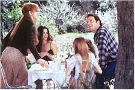

Contents | Features | Reviews | Books | Archives | Store |
 |
|
| Movie Credits | Buy It! |
Practical Magic
Review by Eddie Cockrell
Posted 16 October 1998
 |
Directed by Griffin Dunne Starring
Sandra Bullock, Nicole Kidman, Screenplay by Alice Hoffman, Robin Swicord, |
"There's a little witch in all of us," Dianne Wiest's Aunt Jet coos near the dramatically disastrous denouement of this engaging, if ultimately insecure and exasperating, Hollywood entertainment in which the two daughters of a New England witch learn to live with the peculiar curse bestowed upon them by their mother. If Practical Magic had stuck more closely to that intriguing idea instead of surrendering to the siren song of specious special effects and muddled motivations, the result would've been a bit more practical and a lot more magic.
Everybody on tiny Maria's Island, Massachusetts, knows to avoid the Owens women, who have through time created a stir with their supernatural abilities. Before dying of a broken heart, the mother of bookish Sally (Sandra Bullock) and swingin' Gillian (Nicole Kidman) Owens places a curse on the siblings: any man who loves them is doomed to an early death (which is announced by the chittering of a Death's Head Beetle).
Sally and Gillian are sent to live in a huge seaside Victorian mansion with their eccentric aunts, Jet (Wiest) and Francis (Stockard Channing), who immediately decree a diet of chocolate cake for breakfast -- they've never had children of their own -- and coach the girls in the finer points of the black arts. Determined not to fall in love, Sally uses her powers for low-level conveniences like stirring tea and lighting candles, while Gillian leaves the nest to experience the world, eventually falling in with tempermental Bulgarian Jimmy (Croatia-born Goran Visnjic, who was in The Peacemaker and Welcome to Sarajevo).
Three years later, after a marriage concocted at least in part by the helpful aunts, Sally's blue-collar husband Michael (Mark Feuerstein) is killed in a tragic accident, leaving her with two young girls and time to devote to the pressing problems of the prodigal Gillian. While helping to set Gillian's life right (a risky undertaking to say the least), Sally attracts the attention of special investigator Gary Hallet (Aidan Quinn), who arrives from Arizona to question the sisters. Against their better judgment (Sally's done with men, Gary walks around the picturesque town muttering about the "damn twilight zone"), the two fall in love -- but not without some paranormal hijinks.
Practical Magic begins as a stimulating brew of Beetlejuice, "Bewitched" and a modified "The Munsters," as it casts an appealing, if somewhat cloying spell of sisterhood and security (does anybody really own and live in houses like these?) while exploring the effects of special powers on a benevolent family. The movie is particularly clever in the details, as a blender is pressed into service as a cauldron, whipped cream is a pleasing substitute to draw a pentagram on the chest of a prostrate victim, and a would-be witch who can't find her broom shows up for a seance with a Dustbuster. And its one big idea -- that men, good, bad and ugly, are disposable commodities -- is approached with a good deal of knowing gusto.
Yet all the good will stored up in the early reels is rapidly undone as the story veers alarmingly into a glib and unstable blend of Arsenic and Old Lace, The Trouble with Harry and Death Becomes Her: Jimmy pops up repeatedly (and sometimes puzzlingly) to jump-start the stalled narrative, and the choppy, grandstanding climax (clearly cribbed from Beetlejuice, as is a drunken party with the aunts and sisters scored to Harry Nilsson's "Coconut") falls fast and flat.
In a cast full of potential career-best performances, the winsome Bullock and rugged Quinn come off best as the star-crossed lovers who live in very different worlds. She's rarely been a more pleasing combination of vulnerability and sass, while he has the bulk of the good lines and funny business as a hunky, by-the-book cop bewildered by the events surrounding him and his own strong romantic urgings. As an actress, Kidman is a lot better than the slatternly Gillian lets her be, and she's in serious jeopardy of being typecast as the amoral party girl (with or without the last-minute change of heart, depending on the project). Channing and Wiest have great fun with parts that conveniently and unconvincingly disappear for a pivotal part of the movie (taking the children with them), while Visnjic is appropriately menacing in the film's most thankless role.
So what happened? Practical Magic was produced by long-time Tim Burton associate Denise Di Novi (thus the Beetlejuice influence) with a lush, widescreen approach massaged by an obtrusive score by Michael Nyman which is constantly reminding the audience of the movie's whimsicality -- and becomes increasingly forced and grating as events unfold. Actor-turned-director Griffin Dunne (he was in Martin Scorsese's After Hours) brings the same mercurial emotions to the film's pacing and performances he brought to the wildly uneven Addicted to Love -- a movie that, like Practical Magic, needed a firm hand to decide what, exactly, it would be about before filming started. Alice Hoffman's best-selling novel was adapted by the decidedly odd coupling of Robin Swicord -- whose credits include the recent adaptations of Little Women and Matilda -- and the exasperating Akiva Goldsman, who keeps getting work despite such dismal efforts as Batman & Robin and Lost in Space. Thus, Practical Magic is caught between familial and sensationalist sensibilities and can be true to neither without serious dramatic sacrifice. Add to that the calculated and predictable use of high-profile chick-flick songs -- just when you think the movie is like watching a Stevie Nicks album, sure enough, she caterwauls over the closing credits -- and the movie has the potential to be positively annoying for those not caught up in the spirit of the proceedings.
Ironically, the trailer spliced on to the beginning of the print at the pre-release sneak screening trumpeted a refurbished The Wizard of Oz, a durable classic of whimsical magic that even in snippets makes the more commercial decisions of those responsible for this seem not only regrettable, but foolish. Two thirds of a very good movie about that little bit of witch in women and the mischief of which they're capable in the name of love, this incarnation of Practical Magic could've used a last-minute exorcism of its last two reels.
Contents | Features | Reviews | Books | Archives | Store
Copyright © 1999 by Nitrate Productions, Inc. All Rights Reserved.